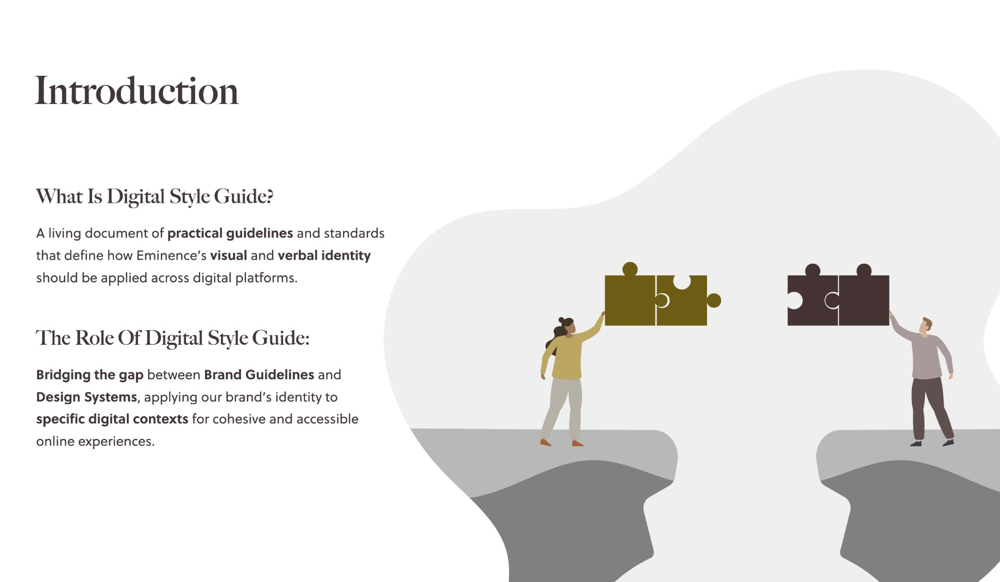
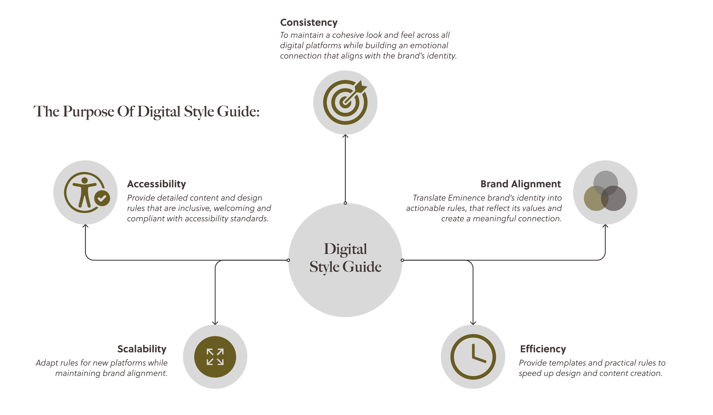
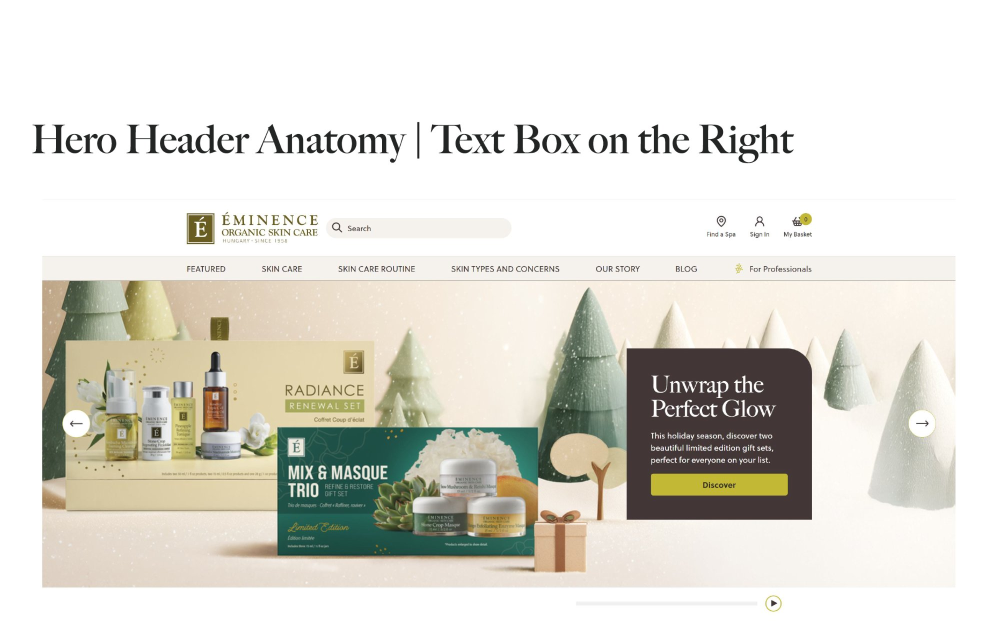
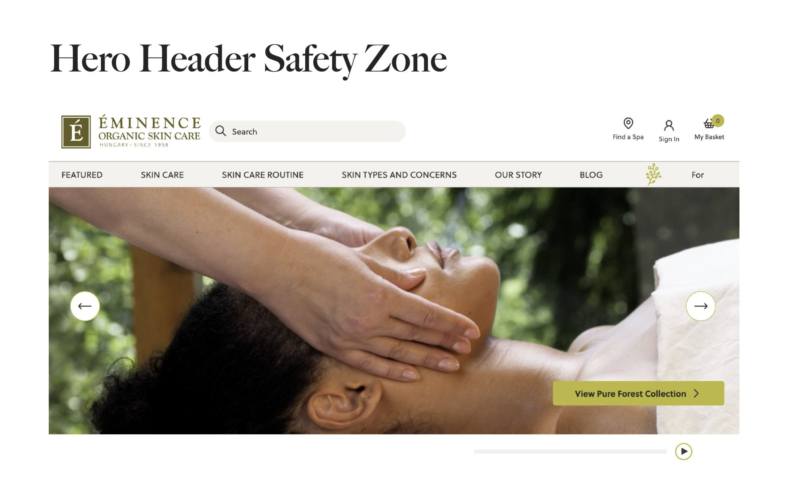
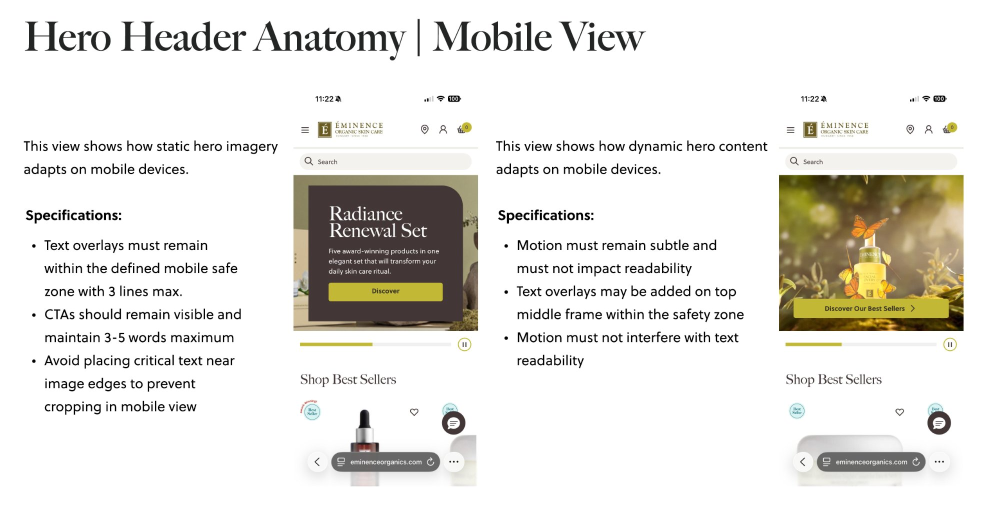
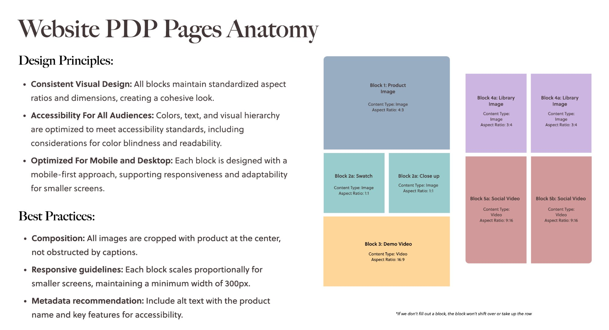
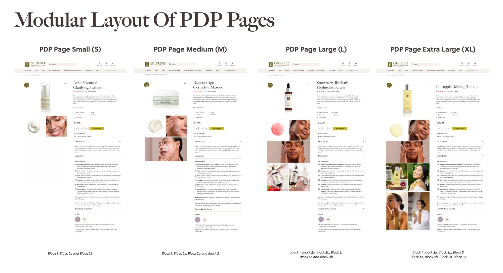

As demand for digital content grew across websites, email and social channels, teams needed a clearer way to translate brand guidelines into day-to-day production. Brand guidelines defined identity through values and visual principles, while designers worked to define how content scales across formats and platforms, from resizing and contrast to alt text and captions.
Designers made different calls on similar decisions, creating variation in output and slowing alignment during review and approval. Cross-functional teams worked from different assumptions about what "on brand" meant in practice.
Teams needed a shared production reference to guide decisions across projects. Without it, each campaign required reinterpreting layouts and accessibility, which led to variation in output and slower onboarding as knowledge remained distributed across teams.
The goal was to build a translation layer, a system that carries brand identity into digital production in a clear and repeatable way, while also supporting consistency across teams and platforms.
I developed the Digital Visual Style Guide as a living document, leading the structure and visual system while collaborating with the project manager and website team to gather technical specifications and requirements.
The guide translates brand guidelines and website design systems into practical rules that teams can apply directly in their work and establishes a shared reference for decision-making that supports consistent production across teams.


From the Digital Visual Style Guide, internal documentation developed for the digital creative team.
Four principles guide teams with a shared vocabulary for visual mood and tone in creative decisions.
The homepage hero banner is structured through defined layout rules that guide safety zones and responsive behavior across desktop and mobile. These specifications ensure that the most important messaging remains consistently positioned across formats.
Both static and dynamic carousel formats are supported, with clear guidance for text box placement, CTA visibility and motion behavior. On mobile, content adapts within defined safe zones to maintain readability and prevent cropping across screen sizes.

Static carousel — text box right

Dynamic carousel — CTA only

Mobile adaptation — static and dynamic hero content
This system extends across Product Listing Pages (PLP) and Product Detail Pages (PDP) and maintains a consistent structure from browsing to product-level content. Product Detail Pages (PDP) are structured into content blocks, each with fixed specifications for content type, aspect ratio and accessibility requirements. Built as a modular library in Figma, the system allows teams to assemble layouts by selecting the appropriate blocks for each product.
Product Listing Pages (PLP) are structured with clear specifications for grid layout, image ratios and content hierarchy. Designed to support browsing and navigation, the system allows teams to present products consistently across categories.

PDP page anatomy — block structure, content types and aspect ratios defined across all digital touchpoints.
Each content block defines its purpose, format and placement and helps teams assemble pages consistently while adapting to different product needs.

Modular PDP layout — S, M, L and XL configurations showing how content blocks scale across product page sizes.
These specifications allow teams to work within a defined structure and apply layout decisions consistently across campaigns.
Accessibility is built directly into the system. Each content module includes guidance for alt text and contrast, along with rules for typography and placement. This integrates inclusive design into the production process.
These standards support readability and consistency across devices and audiences.

Colour contrast — WCAG AA minimum standards with inaccessible and accessible examples

Alt text and form labelling — practical examples using Eminence content
- ✓Sufficient color contrast
- ✓Keyboard accessibility and focus states
- ✓Descriptive alternative text for images
- ✓Logical headings and content hierarchy
- ✓Clear labels and error states for forms
- ✓Readability across screen sizes
The style guide gave cross-functional teams a shared framework to work from. Instead of re-aligning on layout and accessibility at the start of each campaign, teams could reference a single document and move faster with more consistent output.
Onboarding new team members became easier and collaboration across teams improved. Accessibility practices became part of the workflow and remained integrated into the production process.
Design systems often focus on UI components, while visual content systems play an equally important role. This work translates brand identity into practical digital rules that teams can apply consistently and supports a shared creative standard across the organization.
This work shaped how I think about visual systems as part of production rather than documentation. A style guide becomes most effective when it supports decisions in real time and aligns how teams work together.
The system continues to evolve as new campaigns introduce different content needs and platform requirements. Each iteration strengthens the structure and improves how teams apply it in practice. Clear structure allows teams to scale production while maintaining consistency and supporting accessibility as part of the process.